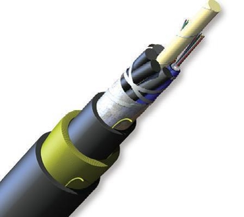
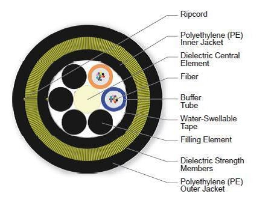
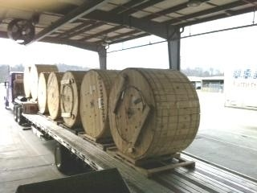

Siempre es más fácil conocer las normas ENEL-CODENSA
Rolex Rolex gold watch, compared with ordinary materials, gold watches are often expensive, but the replica rolex gold watch has the role of swiss replica watches hedging, so that it often becomes the first choice for collectors. The gold watch has value in the world, largely because the omega replica watch brand launched a commemorative limited edition watch or a replica hublot complex movement process or artistic attainments deep watches, mostly preferred gold precious metals such material. These watches tend to have a strong hedging function, therefore, Rolex Rolex gold watch reputation.

ET-AT106 Cables de fibra óptica ADSS para líneas de AT
Datos adicionales
Número de especificación
ET-AT106
Fecha de vigencia
01/03/2014
Herramientas adicionales
- Contenido Ocultar
- 1. OBJETO
- 2. NORMAS APLICABLES
- 3. REQUERIMIENTOS DE CALIDAD
- 4. CAMPO DE APLICACIÓN
- 5. CARACTERÍSTICAS CONSTRUCTIVAS CABLES DIELÉCTRICOS AUTO SOPORTADOS (ADSS)
- 6. INSPECCIÓN TÉCNICA Y PRUEBAS
- 6.1 ENSAYOS DE ACEPTACIÓN
- 6.2 ENSAYOS TIPO O DE HOMOLOGACIÓN
- 7. RECEPCIÓN E INFORMACIÓN TÉCNICA (EMBALAJE Y TRANSPORTE)
- 8. INFORMACIÓN A PRESENTAR EN LA OFERTA TÉCNICA
- 9. GARANTÍA
- 10. TABLAS DE CARACTERÍSTICAS TÉCNICAS GARANTIZADAS
- 11. OTRAS CONCIDERACIONES
1. OBJETO
Este documento tiene por objeto especificar las características ópticas, mecánicas y eléctricas que deben cumplir los cables autosoportados (ADSS), que hayan de tenderse soportados por líneas eléctricas de alta tensión propiedad de ENEL CODENSA, así como las recomendaciones y ensayos que deben satisfacer. Se tendrán en cuenta todas aquellas recomendaciones y ensayos que sean aplicables, según las características particulares de la solución a ofertar.2. NORMAS APLICABLES
Para el diseño, fabricación y pruebas, los cables de fibra óptica así como sus componentes, deberán cumplir con las prescripciones de la última versión de alguna de las siguientes normas:- ITU-T G.650 Definition and test methods for the relevant parameters of single-mode fibers
- ITU-T G.652-D Characteristics of a single-mode optical fibre and cable
- EIA/TIA-598-C Optical Fiber Cable Color Coding
- IEC 60793-1-1:2017 Optical fibres - Part 1-1: Measurement methods and test procedures - General and guidance
- IEC 60793-2-10:2019 Optical fibres - Part 2-10: Product specifications - Sectional specification for category A1 multimode fibres
- IEC 60794-1-2:2017 Optical fibre cables - Part 1-2: Generic specification - Basic optical cable test procedures - General guidance
- IEC 60794-4:2018 Optical fibre cables - Part 4: Sectional specification - Aerial optical cables along electrical power lines
3. REQUERIMIENTOS DE CALIDAD
El oferente deberá tener implementado un sistema de calidad basado en las normas de la serie ISO -9001 del año 2000, el cual cubra los procedimientos para diseño, manufactura, instalación, servicios, inspecciones y pruebas. Este sistema de calidad deberá tener la correspondiente certificación vigente.4. CAMPO DE APLICACIÓN
Esta especificación esta desarrollada para cables de fibra óptica que se utilizarán en líneas aéreas con voltajes iguales o superiores a 57.5 kV, en ambientes normales y severos de contaminación, alto grado de humedad y neblina. Sus características deberán adecuarse a dichas condiciones de servicio.5. CARACTERÍSTICAS CONSTRUCTIVAS CABLES DIELÉCTRICOS AUTO SOPORTADOS (ADSS)
Estas definiciones son aplicables al suministro y recepción de cables ópticos autosoportados destinados a las líneas eléctricas aéreas de la red de AT de CODENSA SA ESP.5.1.1 Características de cable ADSS
Deberá estar compuesto por una primera cubierta interior de material termoplástico sobre la que se dispondrán cabos de fibra aramida como elementos resistentes a la tracción. Si procede se protegerán con cintas de fibra aramida resistente a impactos de disparo. Sobre el conjunto así formado se extruirá una cubierta exterior de material termoplástico que deberá cumplir las características de las normas indicadas (adecuado para tracking cuando proceda).
En el interior de la primera cubierta se aloja el núcleo óptico formado por un elemento central mecánicamente resistente, por tubos holgados que alojarán las fibras, en cuyo interior se dispondrá de un gel anti-humedad y absorbente de hidrogeno. Todo el conjunto estará envuelto por unas cintas de sujeción y protección. SPAN: 1000
5.1.2 Características mecánicas y eléctricas del cable.
| Número de fibras | 12 | 24 |
| Diámetro del cable (mm) | 17 ó 19 /- 0,3 | 17 ó 19 /- 0,3 |
| Carga de rotura (Kg.) | >6000 | >6000 |
| Peso (Kg./Km.) | 200<p<300 | 200<p<300 |
| Coeficiente de Dilatación (x10-6 C-1) | 3<c<5 | 3<c<5 |
| Radio de curvatura (mm) | 350 | 350 |
| Protección anticazadores (m) | 20-30 | 20-30 |
| SPAM | 1000mts | 1000mts |
| Cubierta antitraking (Kv) | 25 | 25 |
5.1.2.1 Composición


Figura 1: Composición del cable (Imagen de referencia)
5.1.2.1.1 Núcleo óptico
- Soporte central: elemento central de refuerzo dieléctrico
- Fibras ópticas: 24 (6 Fibras por Bufer)
- Tipos de fibras ópticas: se define en el Apartado “3.2.3 Fibra óptica”.
- Segunda protección: holgada en el interior de tubos, con cintas de protección, sujeción tanto técnica como mecánica y gel protector. No se instalaran fibras de diferente tipo por el mismo tubo.
5.1.2.1.2 Protección del núcleo óptico
Las protecciones están constituidas por sucesivas capas que se describen a continuación:
- Primera cubierta de polietileno de baja densidad.
- Elemento resistente a la tracción de cabos de fibra aramida.
- Armaduras resistentes a disparos compuestas de cintas de fibra aramida.
- Cubierta exterior de polietileno de media-alta densidad (adecuada para el tracking).
5.1.2.1.3 Características generales de la fibra óptica:
Se cumplirá la recomendación ITU-T G.652-D para fibras monomodo.
| Fibra óptica | Monomodo |
| Diámetro campo modal (a 1310 nm) | 8,6 - 9,5 + 0,5 um |
| Diámetro de revestimiento nominal | 125 um+1% del valor |
| No Circularidad del revestimiento | <1% |
| No Circularidad del campo de programación monomodal | <6% |
| Error de concentricidad núcleo/revestimiento | < 0,8 um |
| Atenuación: | |
| Para fibra SM =1310 nm | < 0,36 db/Km |
| Para fibra SM =1550 nm | < 0,23 db/Km |
Se verificará la no existencia de discontinuidad.
- Longitud de corte: <1260 nm.
Coeficiente de dispersión cromática:
- Entre 1285 y 1330 nm <=3.5 ps/ (nm.Km)
- Entre 1525 y 1575 nm <=20 ps/ (nm.Km)
5.1.2.1.4 Código de colores para las fibras
El código de colores deberá ser alguno de los dos sistemas que Codensa utiliza en su red de Fibra óptica:
- Código colores Siemens / Corning Glass
- Estándar TIA-598-A
5.1.3 Condiciones ambientales
Los cables autosoportados deberán estar protegidos contra la humedad y cumplirán los requisitos exigidos bajo las siguientes condiciones ambientales:
Humedad relativa:
Mínima: 65% hasta 55 ºC
Máxima: 93% hasta 40ºC
Temperatura:
Funcionamiento: -20ºC < 1 < 70ºC
6. INSPECCIÓN TÉCNICA Y PRUEBAS
El cable de fibra óptica ADSS, deberá cumplir con todas las exigencias de las pruebas de tipo, aceptación y de rutina, descritas en la norma IEC 60794.
Las pruebas tipo deberán ser realizadas y certificadas por laboratorios independientes de reconocido prestigio internacional.
Se entregará a CODENSA un protocolo de los ensayos realizados en fabrica, con todos los valores obtenidos sobre las muestras seleccionadas y certificados acreditativos de las pruebas tipo que se soliciten.
Todos los ensayos se efectuaran en los laboratorios del suministrador, a menos que por acuerdo de CODENSA se haya especificado otro procedimiento.
Se cumplirá la recomendación G.652D de la UIT-T para fibras monomodo y el protocolo de pruebas cable tierra – óptico del grupo de trabajo fibras ópticas de ASINEL (Referencia TEL nº 645 1996).
Se contemplan dos tipos de ensayos:
Ensayos de Aceptación:
Se realizaran en su totalidad o en parte, según se acuerde entre el suministrador en cada una de las entregas del material.
Ensayos de homologación:
Se realizaran en su totalidad o en parte, según se acuerde entre el suministrador y el GE, sobre los cables de nuevo diseño. En el caso de cables ya sometidos a estos ensayos, el suministrador aportará certificado sobre el resultado de los mismos.
Los ensayos de homologación pueden comprender aparte de los indicados como de tales en el protocolo, los indicados como de aceptación, ya que ambos conjuntos son complementarios.
Plan de muestreo
El muestreo y la aceptación o rechazo de un lote de bobinas se regirá por la norma UNE 21-044-74.
Criterios de rechazo.
Se establece como criterio general que todo fallo en el ensayo de una probeta entrañará 2 contraensayos y deberán resultar satisfactorios y atendiendo a lo dispuesto en la norma UNE 21-044-74.
Los criterios de rechazo del resto de materiales se determinan en cada apartado.
Carretes
Los cables se suministraran en carretes de madera, de acuerdo con lo establecido en la norma UNE 21-049-74 para cables ADSS y teniendo en cuenta el radio de curvatura mínimo del cable ADSS.
6.1 ENSAYOS DE ACEPTACIÓN
6.1.1 Fibra Óptica6.1.1.1 Inspección, ensayos y tomas de muestras
Se efectuarán los siguientes ensayos según la Recomendación G-652D de la UIT-T para fibras monomodo y el protocolo de pruebas cable compuesto tierra- óptico del Grupo de Trabajo Fibras Ópticas de ASINEL.
6.1.1.2 Medidas dimensionales
Se realizará un ensayo sobre el 10% de fibras ópticas que componen cada bobina muestreada. Un fallo en un ensayo implicara dos contraensayos con dos fibras diferentes que deberán resultar satisfactorios.
6.1.1.3 Pruebas de atenuación
Se deberá comprobar mediante reflectometría, los parámetros de transmisión de cada una de las fibras ópticas a1300 y 1500 nm. (fibras SM) en el 100% de las bobinas.
Un fallo en una fibra óptica implicará el rechazo de la bobina a la que pertenece. Para el rechazo de un lote se aplicará su norma UNE 21.044-74 (tabla III columna rechazada).
6.1.1.4 Longitud de onda de corte
Se definirá para un largo de fibra de 2 m, con un solo bucle radio 140 mm. Un fallo en el ensayo implicará dos contraensayos con dos fibras diferentes que deberán resultar satisfactorias.
6.1.1.5 Dispersión cromática
Se presentará el certificado de origen del suministrador de las fibras. Se podrá solicitar una medida de contraste. Un fallo en el ensayo implicará dos contraensayos con dos fibras diferentes que deberán resultar satisfactorias. El criterio de rechazo y aceptación será el mismo que el empleado en el ensayo de atenuación, apartado b).
6.1.1.6 Tubos activos holgados de alojamiento de fibras ópticas
Los ensayos a realizar según el método de la norma UNE-EN 60811-1-1 y TEL nº 647 1996, son los siguientes:
- Diámetro
- Espesor
6.1.1.7 Tubos de aluminio de alojamiento del núcleo óptico
Los ensayos a realizar según el método de la norma UNE-EN 60811-1-1, UNE-EN 60811-4-1 y TEL nº 647 1996, son los siguientes:
- Diámetro
- Espesor
6.1.2 Sobre el cable completo
Los ensayos se realizaran según TEL nº 647 1996:
- Carga/ alargamiento
- Prueba de ciclos térmicos.
- Estanqueidad
6.2 ENSAYOS TIPO O DE HOMOLOGACIÓN
Los ensayos se realizaran según TEL nº 647 1996:- Vibración
- Traking
- Aplastamiento
- Doblamiento continuo
- Impacto
- Rotura de cable
- Medida de modulo de elasticidad del cable
- Resistencia a los disparos
- Resistencia al fuego
- Envejecimiento
- Resistencia a la abrasión
7. RECEPCIÓN E INFORMACIÓN TÉCNICA (EMBALAJE Y TRANSPORTE)
Los cables de fibra óptica deberán ser cuidadosamente embalados y debidamente protegidos para resistir la manipulación durante las operaciones de embarque, desembarque y transporte internacional y nacional.Deberán ser empacados preferiblemente en cajones de madera u otro material que aseguren un transporte aceptable y seguro por parte de un transportista regular hasta el punto de entrega requerido por el comprador. Cada cajón deberá ser marcado con un código seleccionado por el fabricante con el propósito de identificar el lote. Estas marcas deberán ser resistentes a la intemperie y a condiciones anormales durante el transporte y almacenaje.
Los cables deberán estar fijados de una forma adecuada tal que se asegure la inmovilización de los mismos durante el transporte y almacenaje. Los cajones de madera deberán tener un diseño que permita su manipulación con vehículo montacargas.
En todos los cajones, deberá incluirse en una tarjeta dentro de un bolsillo plástico externo, que resista el clima, el transporte y manejo, en una parte claramente visible, la longitud del cable, el nombre del comprador y el número de la orden de compra.
8. INFORMACIÓN A PRESENTAR EN LA OFERTA TÉCNICA
El oferente deberá entregar dentro de su propuesta técnica la siguiente información:- Certificado de gestión de calidad ISO 9001.
- Tablas de características técnicas garantizadas diligenciadas em su totalidad, según Anexo 1.
- Listado de suministros similares, con certificado de por lo menos 2 clientes, en los cuales se afirme que conductores similares a los ofertados, han presentado un comportamiento favorable.
- Folletos y Documentacion técnica del conductor y los herrajes.
- Desviaciones técnicas de la oferta.
- Ensayos tipo y ensayos de rutina a suministros similares
- Copia de las normas técnicas empleadas en la fabricación y pruebas del cable y los herrajes.
Es requisito obligatorio para cumplir técnicamente, la presentación de la totalidad de la información anteriormente solicitada.
9. GARANTÍA
El fabricante se comprometerá a una garantía sobre los cables y herrajes por un período mínimo de 3 años, a establecer inmediatamente desde la recepción, obligándose a reponer el tramo del mismo así como los materiales y trabajos asociados, que en dicho período pudieran resultar defectuosos.10. TABLAS DE CARACTERÍSTICAS TÉCNICAS GARANTIZADAS
Las Tablas de Características Técnicas son reproducibles y deberán ser diligenciadas en su totalidad y firmadas por el proponente.Aspectos generales de los proponentes
1. Nombre del fabricante ............................................................
2. Nombre de la fábrica .............................................................
3. País de la fábrica ...............................................................
4. Dirección ........................................................................
5. E- Mail ..........................................................................
6. Nombre persona a contactar ............................................
7. Teléfono / Fax ...................................................................
8. Nombre del representante ....................................................
9. Dirección ...................................................................
10. E- Mail .....................................................................
11. Nombre persona a contactar .......................................
12. Teléfono / Fax ..............................................................
11. OTRAS CONCIDERACIONES
- El cable deberá ser empacado para embarque en un carrete de madera no retornable. Para mayor protección los carretes de madera deberán tener un revestimiento adicional que le ofrece al cable mayor protección durante la transportación. “Reel Lagging” según la siguiente figura:

- Para efectos de pruebas de entrega en bodegas de CODENSA, los extremos interior y exterior del cable deberán estar disponibles para pruebas, ambos extremos del cable deberán estar tapados para prevenir el ingreso de humedad, cada carrete deberá tener adjunto una etiqueta resistente al clima identificando el carrete, el tipo de cable y los datos de la fábrica.
- Para compras de cables de fibra mayores a 5 Km, la longitud recomendada por carrete es de 5 Km, esta definición debe ser re confirmada con el Gestor del contrato según diseños, antes de planificar el empaque del embarque.
- Las chaquetas de los cables deberán estar marcadas con los siguientes datos: CODENSA SA ESP, # del contrato, nombre del proveedor local, nombre del fabricante, año de fabricación, marcas secuénciales en metros, # de parte o referencia del cable, tipo de cable, tipo de fibra, número de fibras, SPAN (Si aplica) e ITU-T G.652D. Ejemplo:
Enel Codensa 8400XXXXXX FABRICANTE 2019 FO ADSS 24 G.652D 0001M
- En la entrega en las bodegas de CODENSA, será responsabilidad del proveedor realizar pruebas de reflectometría de los parámetros de transmisión de cada una de las fibras ópticas a 1300 y 1500 nm. En el 100% de las bobinas, con supervisión de un representante de ENEL . Una vez ENEL reciba a satisfacción la totalidad de las bobinas de cada cable y el oferente entregue el 100% de la documentación solicitada, ENEL procederá a otorgar la conformidad para el pago correspondiente.
- El tiempo de entrega máximo es de 12 semanas, desde la confirmación del pedido por parte de ENEL.
El oferente debe especificar lo siguiente:
| DESCRIPCION | # DIAS |
| Fabricación y pruebas en fábrica | |
| Pruebas de Calidad CMQ | |
| Envió a puerto en Colombia. | |
| Nacionalización | |
| Trasporte Terrestre | |
| Prueba de Carretes en Bogotá | |
| * TOTAL DIAS* |
- En caso de atraso se tendrá una penalización del 0,5% del valor total del pedido, antes de IVA, asociado por cada día hábil de atraso, por razones atribuibles a EL OFERENTE hasta un máximo de 15% del valor total del Pedido.
ANEXO 1. TABLA Nº 1. CARACTERÍSTICAS TÉCNICAS GARANTIZADAS
| ITEM | DESCRIPCION | UNIDAD | SOLICITADO | OFRECIDO |
| 1 | Modelo (designación de fábrica) | - | ||
| 2 | Caracteristicas de la Fibra Optica | |||
| 2,1 | Recomendación | - | ITU-T G.652-D | |
| 2,2 | Fibra Optica | - | Monomodo | |
| 2,3 | Diámetro campo modal (a 1310 nm) | um | 8,6 - 9,5 + 0,5 | |
| 2,4 | Diámetro de revestimiento nominal | - | 125 um+1% del valor | |
| 2,5 | No Circularidad del revestimiento | % | <1 | |
| 2,6 | No Circularidad del campo de programación monomodal | % | <6 | |
| 2,7 | Error de concentricidad núcleo/revestimiento | um | < 0,8 | |
| 2,8 | Atenuacion | |||
| 2,8,1 | Para fibra SM =1310 nm | db/Km | < 0,36 | |
| 2,8,2 | Para fibra SM =1550 nm | db/Km | < 0,23 | |
| 2,9 | Longitud de corte | nm | <1260 | |
| 2,10 | Coeficiente de dispersión cromática: | |||
| 2,10,1 | Entre 1285 y 1330 nm | ps/ (nm.Km) | <=3.5 | |
| 2,10,2 | Entre 1525 y 1575 nm | ps/ (nm.Km) | <=20 | |
| 2,11 | Codigo de colores | Siemens / Corning Glass | ||
| 3 | Caracteristicas Mecanicas y electricas del cable | |||
| 3,1 | No Fibras | 24 | ||
| 3,2 | Diámetro del cable | mm | 17 ó 19 +/- 0,3 | |
| 3,3 | Carga de rotura | kg | >6000 | |
| 3,4 | Peso | (Kg./Km.) | 200<p<300 | |
| 3,5 | Coeficiente de Dilatación (x10-6 C-1) | 3<c<5 | ||
| 3,6 | Radio de curvatura | (mm) | 350 | |
| 3,7 | Protección anticazadores | (m) | 20-30 | |
| 3,8 | SPAM | m | 1000 | |
| 3,9 | Cubierta antitraking | kV | 25 | |
| 4 | Condiciones ambientales | |||
| 4,1,1 | Humedad relativa minima | 65% hasta 55 ºC | ||
| 4,1,2 | Humedadrelativa maxima | 93% hasta 40ºC | ||
| 4,2 | Temperatura de funcionamiento | -20ºC < 1 < 70ºC |